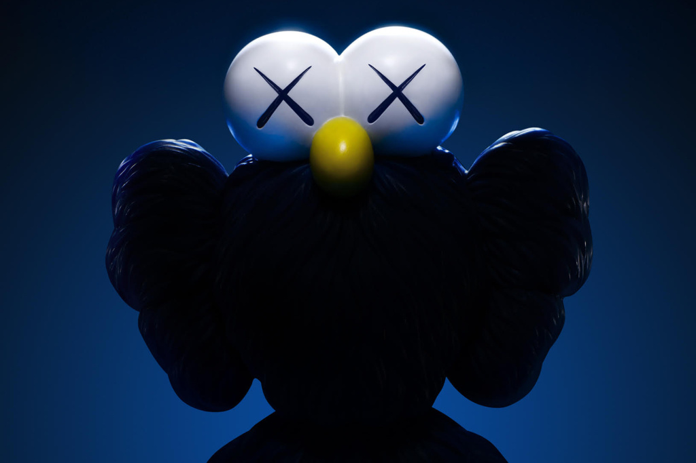
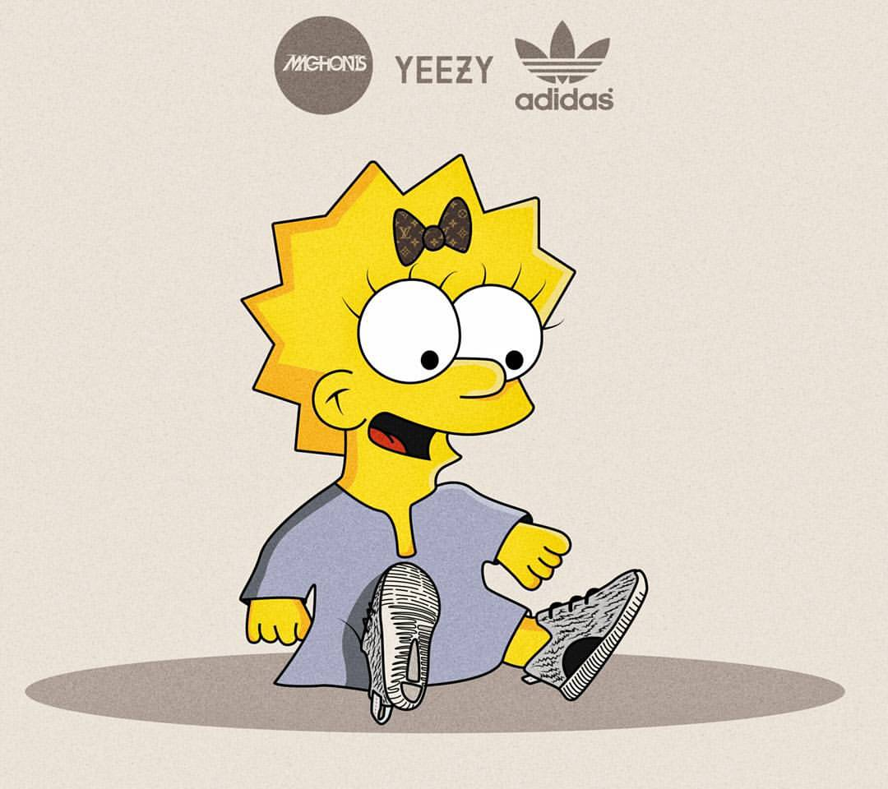
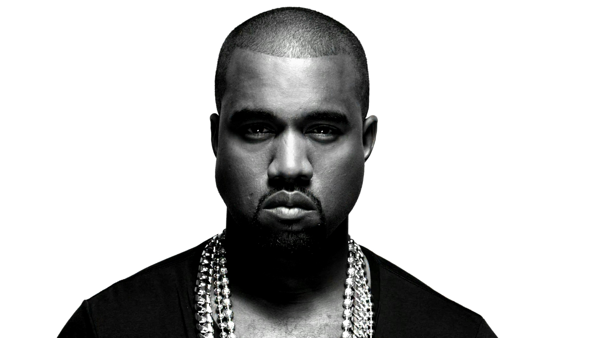

IMAGE
---
KAWS Unveils 'BFF' Sculpture
Highly-acclaimed artist KAWS is debuting a new large-scale sculpture in Bangkok in addition to a complementary product line. As part of a partnership with the iconic Central Embassy in the Thai capital, KAWS’s BFF sculpture will be on display from June 30 to July 31.
Yeezy Family? Yes, man! Yeezy 350 for kids - it’s official!
#TheSimpsons #Simpsons #Simpsonowie #TheSimpsonsFamily #MaagieSimpson #yeezy #yeezyboost #yeezy350 #adidasy3 #adidasyeezy #KanyeWest #child #yeezykids #yeezyforkids #dope #graphicdesign #design #PolishDesigner #illustration
Kanye West’s Secret Weapon Is His Versatility
Late last year, in what seemed like a lost bet with his label Def Jam, Kanye West did a nationwide commercial radio tour. I’m not talking about the next-level Zane Lowe BBC interview everyone raved over, I’m talking about Kanye going to pop and “urban”-format radio stations with cheesy DJs.
Beauty and the Beast

Walt Disney Pictures‘ Beauty and the Beast just broke the March box office record with a $174.8 million dollar opening, and will cross the $400 million global box office threshold today on its way to undoubtedly join the billion dollar club.
TEXT
---
Sun Shine
Hello Shine…Shine.. Oh! Mr. Bright Smile Filled with every thoughts & happy feeling The cupcake to my heart and the sweetest seranade You bright up my light the excitement and the joy I’ve found And i knew it from the start that this is between me
Dead Leaves
The breaking dead leaves ’neath my feet A plaintive melody repeat, Recalling shattered hopes that lie As relics of a bygone sky. Again I thread the mazy past, Back where the mounds are scattered fast— Oh! foolish tears, why do you start, To break of dead leaves in the heart?
No, Don’t
You can’t sit in the cement highchair, sit in this landscape room, this come to crime test, alive here for feeling, or take me to nothing sound-past longing with the lion who won’t eat you, who won’t eat me, facing the animal garden, shaking his yellow haystack head.